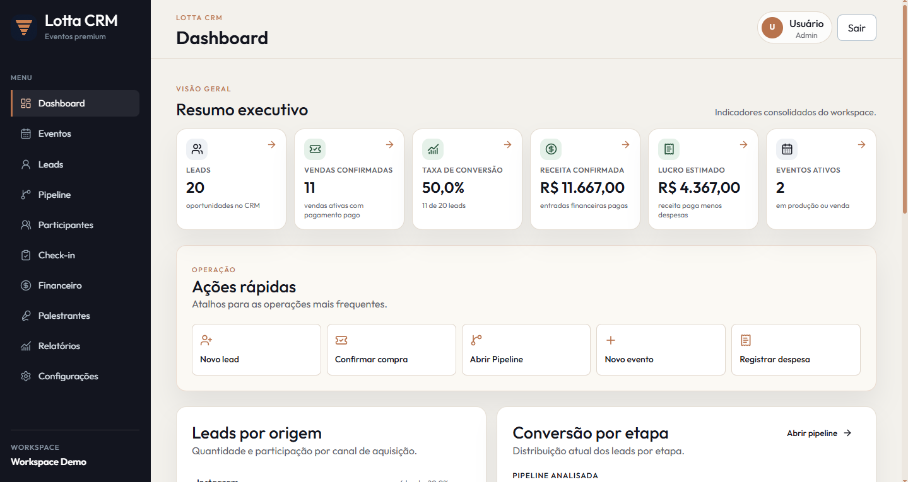
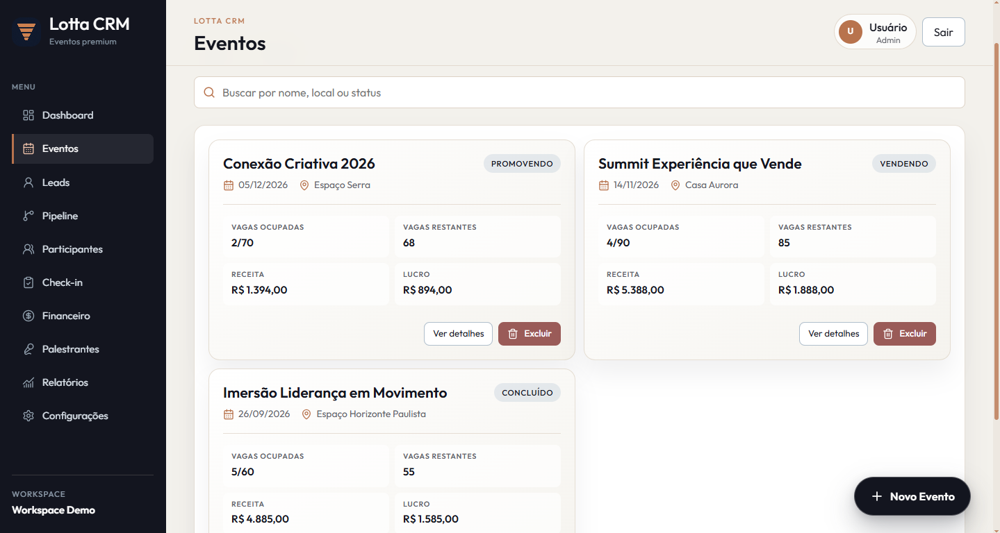
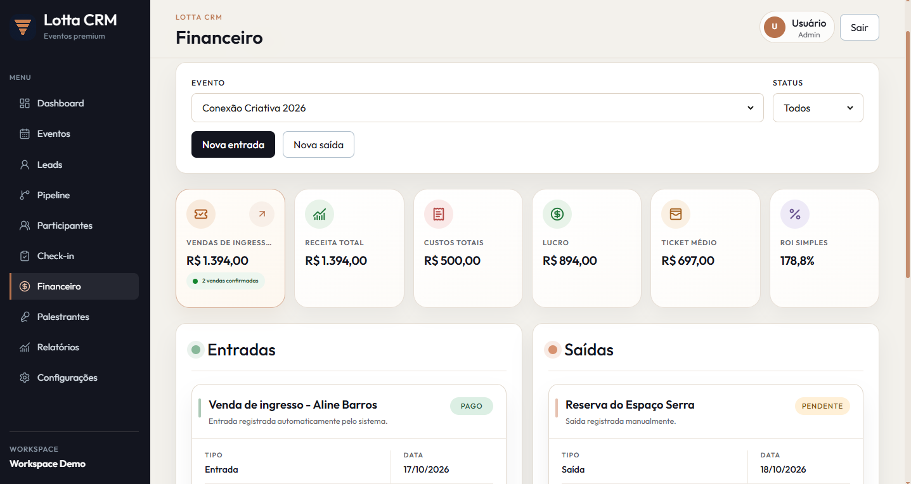
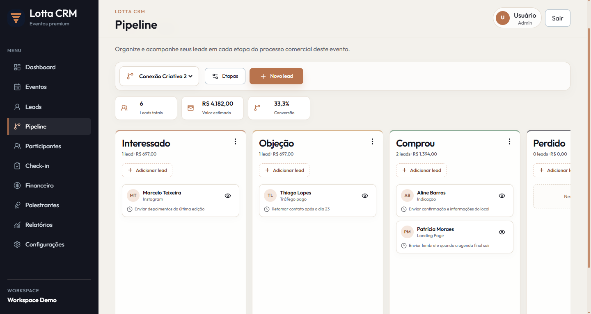
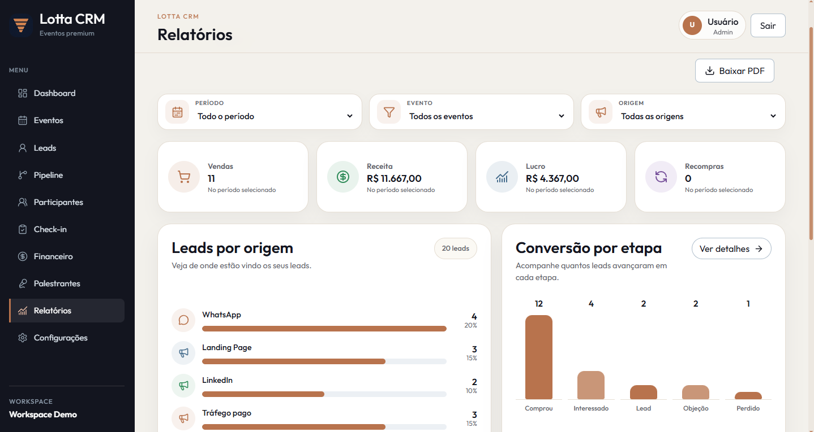

CRM comercial
Acompanhe contatos, oportunidades e negociações desde o primeiro interesse.
Visão comercial completa
Gestão comercial e operacional de eventos
Organize vendas, participantes, parceiros e todas as etapas do seu evento em um único lugar. Chega de depender de planilhas, conversas perdidas no WhatsApp e informações espalhadas.
O Lotta CRM transforma a organização do seu evento em uma operação estruturada, acompanhável e profissional.
Vendas, participantes, parceiros e etapas conectados em um só sistema.
Sua operação, em perspectiva
Dashboard Lotta CRM
Dashboard do Lotta CRM
A captura real será exibida aqui automaticamente.assets/screenshots/dashboard.png
O bastidor também importa
Antes do evento acontecer, existe uma operação inteira nos bastidores: leads chegando, inscrições sendo vendidas, pagamentos acompanhados, palestrantes alinhados, patrocinadores negociados e equipes organizadas.
Quando cada informação está em um lugar diferente, você perde tempo, dinheiro e controle. O Lotta coloca essa operação em um só lugar.
Um evento. Uma operação. Um sistema.
Uma plataforma criada para as principais etapas da operação comercial e estrutural de eventos.
Acompanhe contatos, oportunidades e negociações desde o primeiro interesse.
Tenha mais controle sobre quem está entrando no evento e em qual etapa está.
Centralize informações e acompanhe o que precisa ser feito.
Organize patrocinadores, fornecedores e parceiros comerciais.
Saiba o que já aconteceu, o que está acontecendo e o que ainda precisa acontecer.
Continue acompanhando seus contatos e oportunidades quando as portas se fecharem.
Entender a jornadaOrganize o bastidor
Você não criou um evento para passar o dia procurando informações. O Lotta transforma dados espalhados em uma operação organizada.

Página de Eventos
Espaço preparado para a captura real.assets/screenshots/eventos.png
Do primeiro contato ao pós-evento
Acompanhe cada avanço sem perder o histórico, a próxima ação ou uma nova oportunidade.
Interesse recebido
Conversa avançando
Venda confirmada
Presença organizada
Operação acontecendo
Relacionamento ativo
Ciclo recomeça

Página Financeira
Espaço preparado para a captura real.assets/screenshots/financeiro.png
Financeiro
Conecte o que foi negociado, o que foi pago e o que ainda precisa de atenção à mesma visão usada para acompanhar participantes e operação.
Informação financeira no contexto certo para decisões mais rápidas e seguras.
Visão que move a operação
Pipeline
Acompanhe sua operação comercial em uma visão prática, saiba onde cada negociação está e mantenha o ritmo sem deixar oportunidades se perderem pelo caminho.
Menos achismo. Mais clareza para saber o que fazer agora.

Pipeline comercial
Espaço preparado para a captura real.assets/screenshots/pipeline.png

Área de Relatórios
Espaço preparado para a captura real.assets/screenshots/relatorios.png
Relatórios
Transforme o andamento da operação em uma leitura direta do que merece atenção. Com os números à vista, sua equipe ganha contexto para agir no momento certo.
Acompanhe o que avança e enxergue onde sua operação precisa de ação.
De ponta a ponta
Antes
Durante
Depois
Para quem é
Se existe venda, relacionamento e operação por trás do seu evento, o Lotta pode fazer parte da estrutura.
Estruture operações complexas com diferentes públicos e parceiros.
Organize vendas, participantes e cada etapa da operação.
Tenha controle sobre cada participante e momento da experiência.
Conecte profissionais, marcas, patrocinadores e experiências.
Adapte a estrutura ao processo comercial e operacional do seu evento.
Você não precisa de mais uma planilha
— Operação espalhada
+ Com o Lotta
Planos Lotta CRM
Os dois planos dão acesso à plataforma completa para gerir seu evento. A escolha depende de quantas pessoas precisam colaborar na operação e de quantos perfis de administrador sua equipe precisa.
Toda a operação na mão de quem faz acontecer — com estrutura para parar de apagar incêndios.
R$ 97 /mês
30 dias grátis
Até 2 usuários administradores
Feito para ganhar organização desde já:
Mais pessoas em campo, mais ritmo na operação e a mesma visão para o evento inteiro.
R$ 197 /mês
30 dias grátis
Até 5 usuários no total até 3 administradores
Mais equipe para avançar com escala:
O Lotta completo está nos dois planos. Você escolhe a estrutura que acompanha o ritmo da sua equipe.
Perguntas frequentes
Ainda ficou com alguma dúvida? Conheça a plataforma e veja como ela se encaixa na sua operação.
Falar sobre o LottaNão. O Lotta nasceu com uma forte aplicação no mercado de beleza, mas sua estrutura pode ser utilizada por diferentes tipos de eventos e nichos.
Não. A plataforma foi pensada para ajudar desde organizadores que estão estruturando sua operação até empresas que já realizam eventos recorrentes.
A proposta é reduzir a dependência de informações espalhadas em planilhas e outros canais, centralizando a operação em um único sistema.
A estrutura permite organizar sua operação de acordo com seus eventos e processos. Consulte as condições do plano escolhido.
Não. O Lotta acompanha toda a jornada: antes, durante e depois do evento, conectando o CRM comercial à operação.
Organize o bastidor. Profissionalize o evento.
Transforme seu evento em uma operação estruturada, acompanhável e profissional.
Conhecer o Lotta